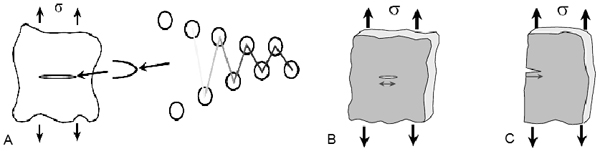
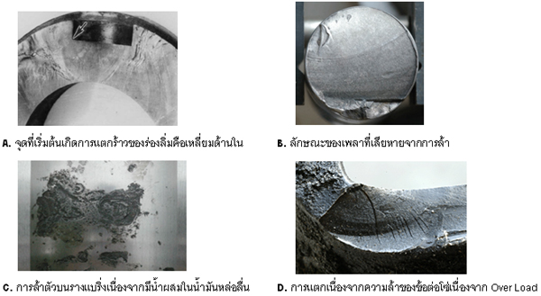

APE 112
ความล้าของวัสดุ(FATIGUE)
ความเสียหายจากความล้าของวัสดุเป็นการเสียหายที่เกิดขึ้นจากการที่วัสดุหรือชิ้นส่วนนั้น ๆ เกิดความล้าตัวอันเนื่องมาจากการเปลี่ยนแปลงของแรงที่เปลี่ยนแปลงขนาดและกระทำกลับไปกลับมา (Dynamics Load) บนวัสดุในช่วงเวลาที่พิจารณา (Repeated Cycling of the Load) ซ้ำกันไปเป็นเวลานานทำให้วัสดุในจุดที่รับความเค้น (Stress) เกิดการล้าตัวมากขึ้นเรื่อย ๆ หลังจากนั้นในจุดดังกล่าวของวัสดุก็จะเกิดรอยแตกร้าว (Crack) ขึ้น จากรอยแตกร้าวเล็ก ๆ ก็จะขยายเป็นรอยที่ใหญ่ขึ้นและพังเสียหายในที่สุด เราเรียกความเสียหายดังกล่าวที่เกิดจาก Dynamics Loading ว่าความล้า (Fatigue) ซึ่งความเสียหายดังกล่าวที่เราสามารถพบได้ดังเช่น เพลาขับของรถยนต์ ใบพัดเครื่องบิน ตลอดจนชิ้นส่วนต่าง ๆ ของเครื่องจักรกล เช่น ผิวหน้าของฟันเฟือง โซ่ หรือส่วนที่เป็นร่องลิ่มของมู่เล่ สำหรับความเสียหายที่เกิดกับชิ้นส่วนของเครื่องจักรเราพบว่าประมาณ 90% มาจากความล้าตัวของโลหะหรือวัสดุ
กลไกความเสียหายที่เกิดขึ้นมี3 ขั้นตอน
* การเริ่มต้นแตก (Crack Initial) เริ่มต้นเกิดรอยแตกร้าวขนาดเล็กขึ้นที่ผิววัสดุ โดยส่วนที่เริ่มต้นการแตกร้าวนั้นจะเริ่มต้นจากส่วนต่าง ๆและเนื่องจากส่วนต่าง ๆ เหล่านี้มีพื้นที่น้อยจึงทำให้ความแข็งแรงน้อยกว่าส่วนอื่น ๆ ดังนั้นเมื่อต้องรับภาระเท่ากับส่วนอื่น ๆ ส่วนนี้จึงเกิดการล้าตัวและเกิดความเสียหายก่อนส่วนอื่นที่รับความเค้นน้อยกว่า

* การขยายตัวของรอยแตก (Crack Propagation) รอยแตกร้าวที่เกิดจากขั้นตอนของการเริ่มต้นแตก (Initial Crack) ซึ่งเป็นขั้นตอนแรกของความเสียหายจะขยายตัวต่อไปเป็นรอยแตกขนาดใหญ่ขึ้นสำหรับความเสียหายที่เกิดขึ้นในขั้นตอนนี้จะดำเนินไปอย่างช้า ๆ ซึ่งจะช้ามากหรือช้าน้อยก็จะขึ้นอยู่กับจำนวนภาระ(Load) ที่มากระทำกับวัสดุ

* ความเสียหายในขั้นตอนสุดท้าย (Final Failure) การแตกหักเสียหายอย่างกะทันหันจะเกิดขึ้นกับพื้นที่วัสดุที่เหลือจนพังเสียหายและไม่สามารถที่จะใช้การได้ในที่สุด
